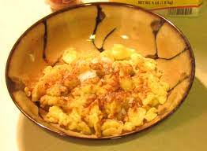

Scrambled Pancakes

Description
Yummy Scrambled Pancakes
Ingredients
- 3 large eggs
- 80 ml unsweetened almond milk
- 4 tbsp almond flour
- 1 tsp ground psyllium husk powder
- 1 tsp baking powder
- ¼ tsp salt
- 1 tbsp butter, for frying
Instructions
- Add the eggs, almond milk, almond flour, psyllium husk powder, baking powder, and salt to a bowl and whisk until smooth.
- Let the batter rest for a couple of minutes to set.
- Heat a large frying pan over medium-high heat.
- Add the butter when hot.
- Pour the batter into the pan.
- Using a rubber spatula, stir from the edges of the pan towards the middle, until the batter is scrambled and cooked.
Nutrients
| Carbs |
Protein |
Fat |
Calories |
Fibre |
Sugar |
Sodium |
Calcium |
Sat |
GL |
| (g) |
(g) |
(g) |
(kCal) |
(g) |
(g) |
(mg) |
(mg) |
Fat (g) |
|
| 2.86 |
9.35 |
14.8 |
182.87 |
2.24 |
0.92 |
332.89 |
187.8 |
4.66 |
0.3 |
Back to top of page